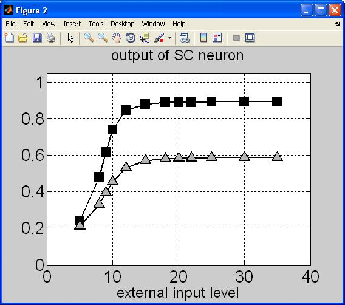

This is the readme for the model associated with the paper:
Ursino M, Cuppini C, Magosso E, Serino A, di Pellegrino G (2009)
Multisensory integration in the superior colliculus: a neural
network model. J Comput Neurosci 26:55-73
This archive contains many matlab programs to run the audiovisual
multisensory model, to generate input and synapses and to make
figures.
A brief description of some of the program files:
rete2D_A_V_SC This is the file which contains the model
USE_THE_MODEL This is the file which allows the single
simulations to be run
inputvisivo
campirecettivi_visivo
input acusticofig
campirecettivi_acustico These four files are used to generate the
inputs and the receptive fields of the
unimodal areas
L_auditory
L_visual
L_SC These three files generate the intra area synapses
The files named "generate" and "macro" are used to generate data
which are used in the files "graph" and "macro"
The files named "graph" and "macro" are used to generate the figures
you can find in the paper.
We have not included macros to generate Figure 9 since it was quite complex,
requiring many parameter changes.
For example Graphs_Fig11b will produce

 These matlab files were contributed by Dr Ursino.
These matlab files were contributed by Dr Ursino.